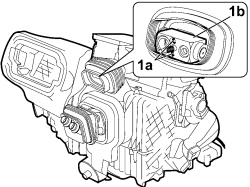

5040B32 EXPANSION VALVE (ORIFICE TUBE) R R WITH AIR CONDITIONER CASE REMOVED
- Path
- Procedures > 50 AUXILIARY UNITS > 5040 AIR CONDITIONING CASING AND COMPONENTS > 5040B SYSTEM SAFETY CONTROL DEVICES > 5040B32 EXPANSION VALVE (ORIFICE TUBE) R R WITH AIR CONDITIONER CASE REMOVED
- Kind
- repair procedure (removal / refitting; the operation number is the code)
- Applies to
- all engines; all production periods
- Interactive page
- https://sloeber94.github.io/elrnDB-fCrm/en/#/194000612
Applies to: all engines; all production periods
 Removing
Removing
 Refitting
Refitting- Turn the ignition key to the OFF position.
- Disconnect the negative battery terminal.
Description | Connector | |
|---|---|---|
BATTERY |
1. Undo the bolts (1a) fixing the expansion valve (1b) and remove the latter from the air conditioning casing.

Applies to: all engines; all production periods
1. Keep the O-ring seals from the connectors.

Applies to: all engines; all production periods
Refitting
Removing- Replace the O rings and position them on the connectors.
- Place the expansion valve in its seat and tighten the fixing bolts.
- Connect the negative battery terminal.
Description | Connector | |
|---|---|---|
BATTERY |